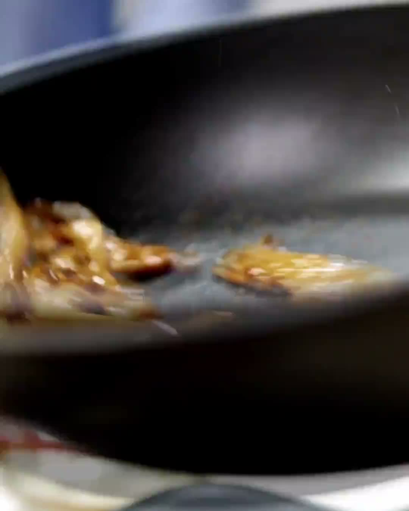
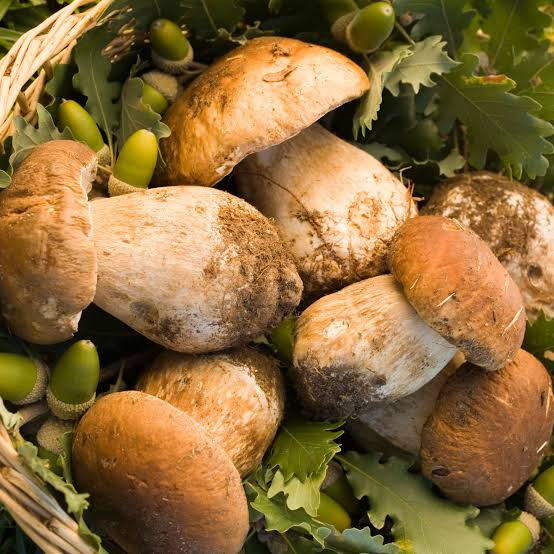
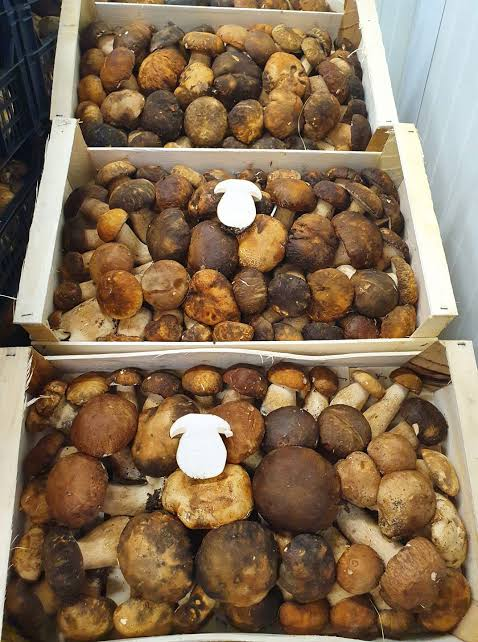
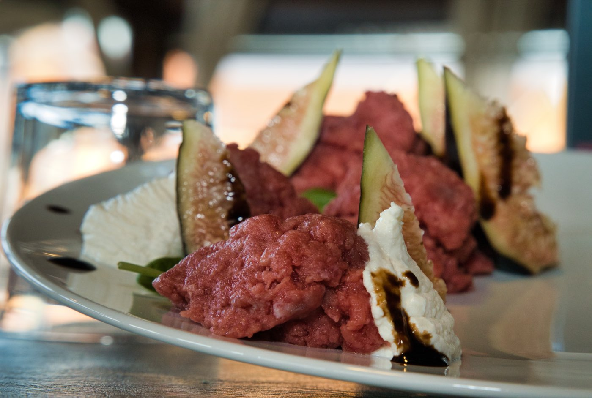
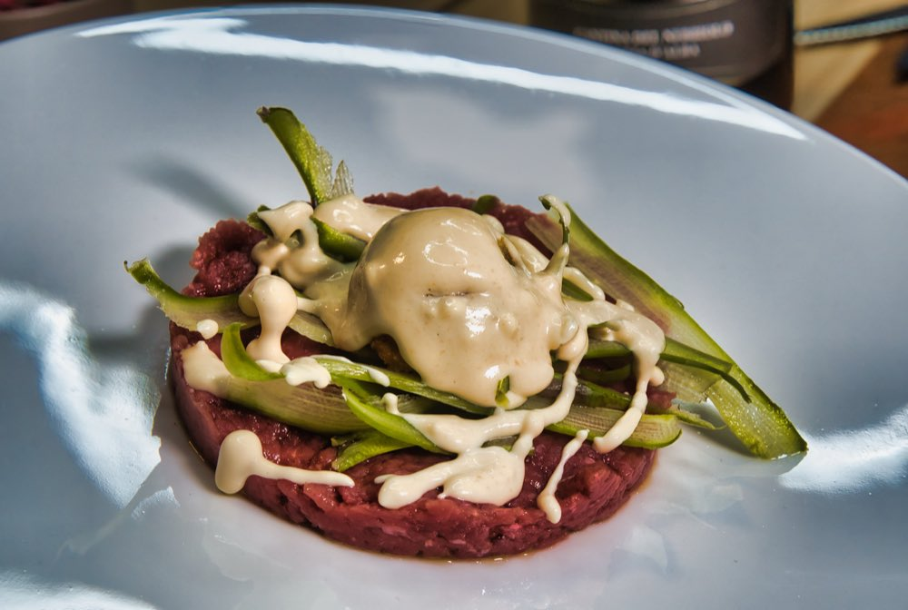
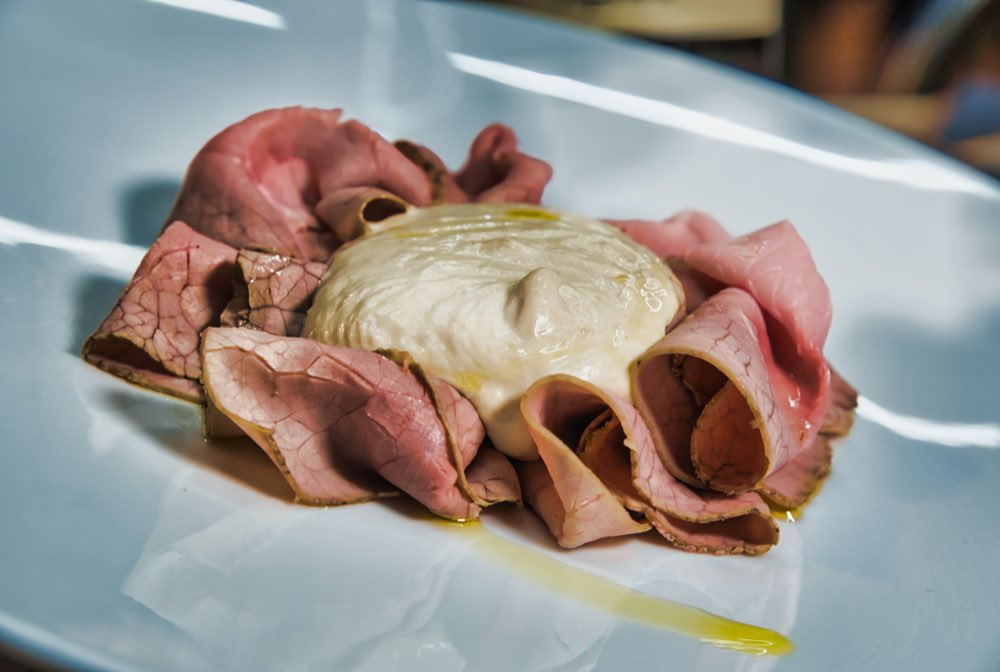
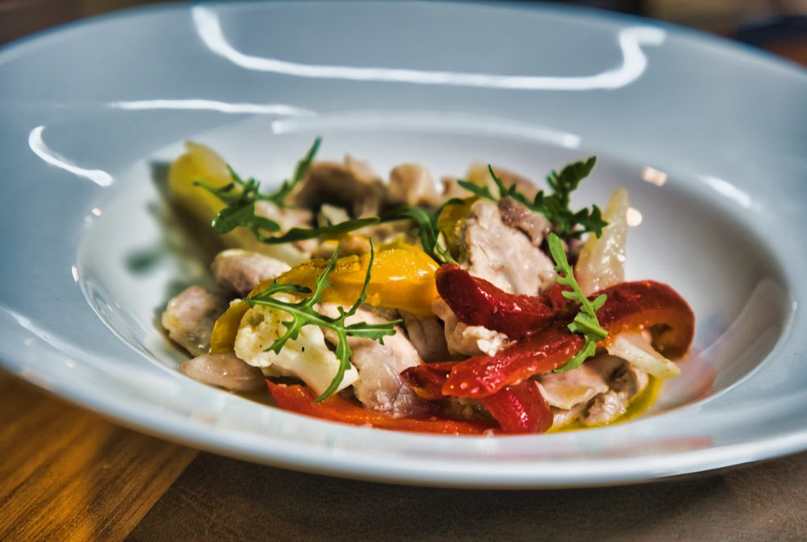
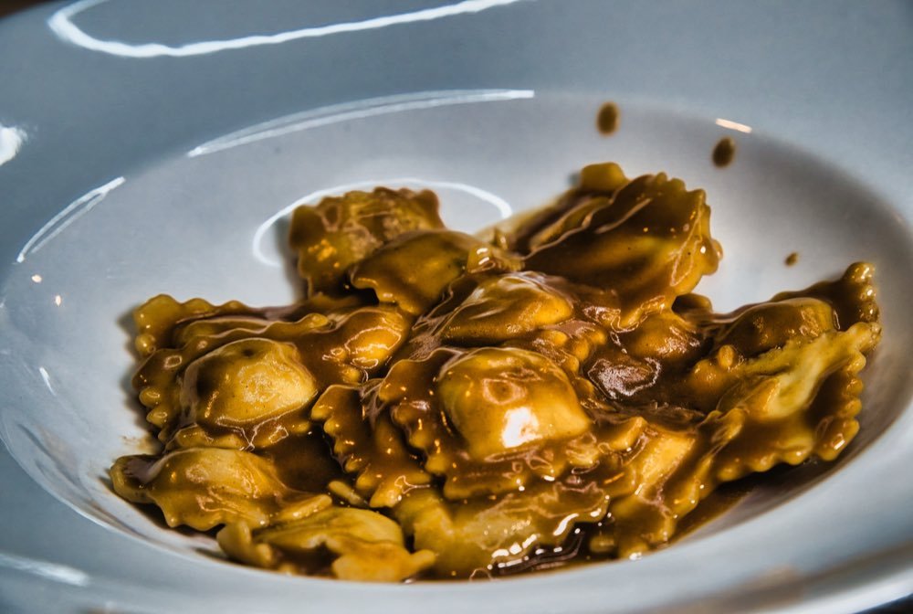
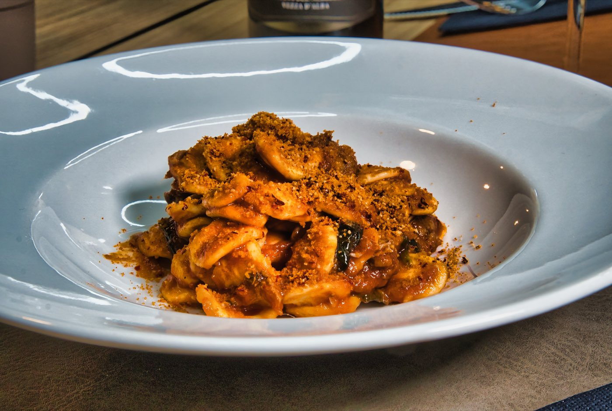

con un menù completo dall'antipasto al dolce
45€ 30€ a persona
Pochi tavoli rimasti
Domenica a pranzo · fino al 30/11
Compilando il form prenoti un tavolo a tuo nome e potrai usufruire dell'offerta. Sarà valida solo per la data inserita.
Pochi tavoli disponibiliAbbiamo avuto tra le mani i migliori porcini della zona, e abbiamo pensato di prepararvi un menù dedicato dall'antipasto al dolce.
Fino a fine novembre potete gustare questa prelibatezza che la natura ci offre una volta all'anno.


Un viaggio di sapori che ti accompagna per tutta la sera.






"La carne migliore che ho mangiato in città. Cottura perfetta, servizio veloce."